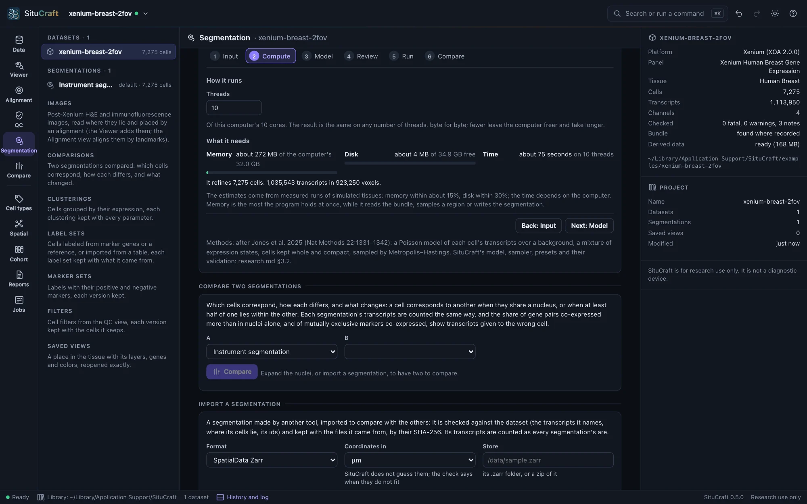
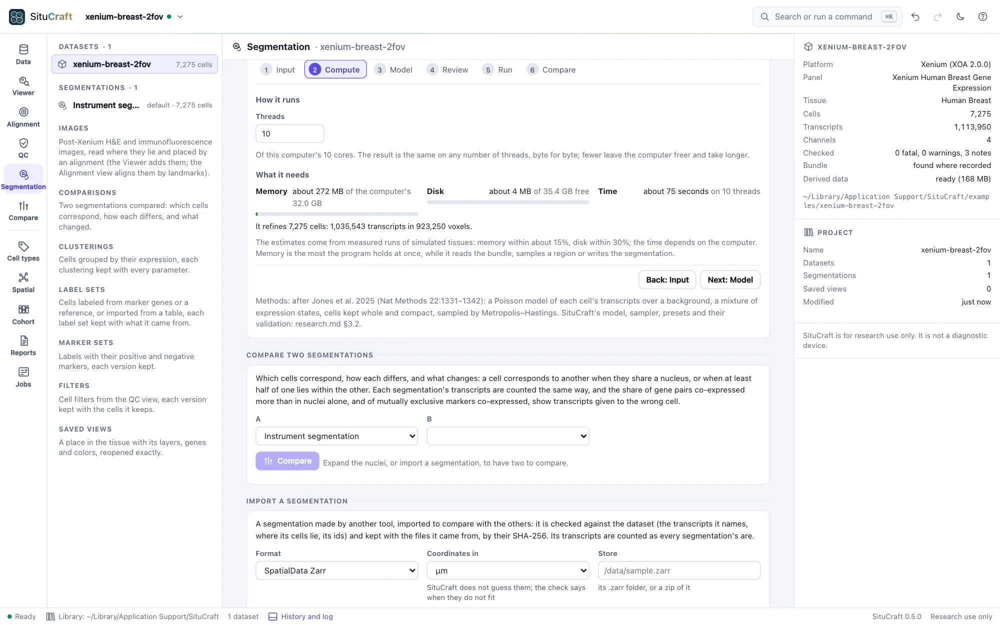

Refinement
SituCraft redraws the instrument's cells from their transcripts, starting from the cells and their nuclei. Its studio says what a run would do on this bundle and this computer before it starts, and the same settings and seed give the same segmentation on any computer.
What it does
Transcript-informed segmentation redraws each cell from the transcripts (SituCraft's implementation, after Jones et al. 2025). It starts from the instrument's cells and their nuclei. Each boundary moves to where the cell's own transcripts are, and each transcript may have drifted from the cell it came from.
The studio
Its studio takes you through six steps, each showing what the run would do on this bundle and this computer:


- Input: the transcripts' quality (Q20 to start), the cells it starts from, and what it covers: the whole tissue, its separate sections apart, or chosen regions (typed in µm, or the region last framed in the Viewer). Outside a region the instrument's cells stay as they are.
- Compute: the threads, and the memory, disk and time it needs against what the computer has.
- Model: a preset (Balanced, Conservative boundary, Flexible morphology, Low memory, ROI pilot, Expert), what it changes and what it risks, and every setting with what it does and costs.
- Review: what will run, anything that stops it (with what to do) and its risks; Refine starts it, and Save the recipe keeps its settings as a file, to run again here or with
situcraft refinein a terminal. - Run: its progress and log, and Stop. A failure says what went wrong and what to do.
- Compare: whether it settled, which cells its result is least sure of (few transcripts, uncertain boundaries, no nucleus), and, for an ROI pilot, how often a second seed put the transcripts in the same cells. Review the differences opens the comparison workspace on it against the instrument's segmentation, made as soon as the refinement is.
A pilot first
The ROI pilot is the place to start on a new tissue: a region of a few hundred µm takes seconds, and its two seeds show how much of the result is chance. The result itself is the summary of many samples from the model: each transcript in its most probable cell, with that probability kept.
Large tissues
A large tissue (more than about 4 million transcripts modeled) is refined in patches of about 2 million transcripts each, one after another, each also refining the cells within 40 µm of its square, and stitched into one segmentation; the Compute step says how many. The result is the same for the same seed whatever the computer. The memory still grows with the tissue, by about 100 bytes a transcript: a tissue of 55 million transcripts needed 5 to 7.4 GB (what it needs).
In the terminal
situcraft refine <bundle> <new folder> runs the same segmentation without the app, from a preset or a recipe saved in the studio (--recipe), and writes its files with the recipe beside them. The same recipe gives the same segmentation, byte for byte, in the app or the terminal, and the folder imports back into the app. situcraft refine -h lists the settings, --preflight says what a run would need, and Formats describes the files.
$ situcraft refine --preflight /path/to/bundle
$ situcraft refine --recipe recipe.json /path/to/bundle /path/to/refined